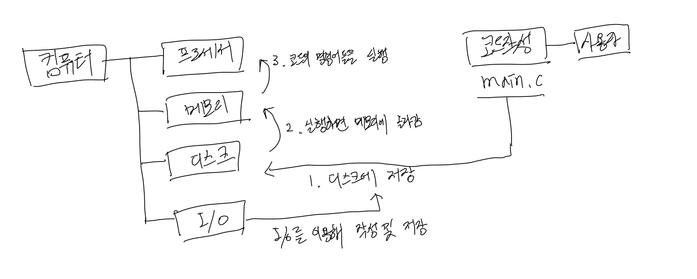
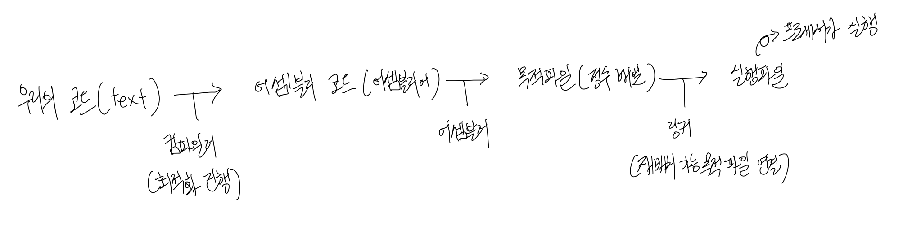
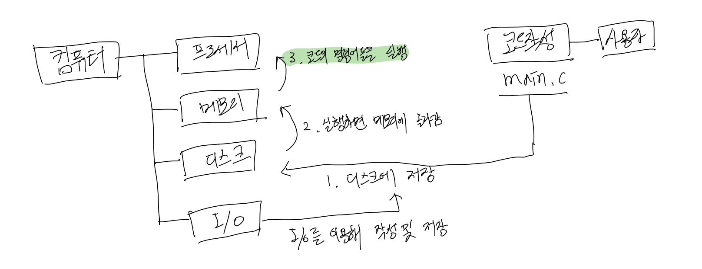
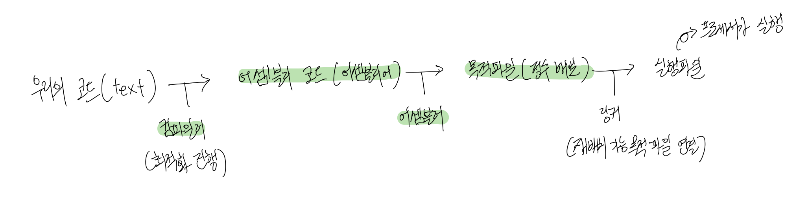
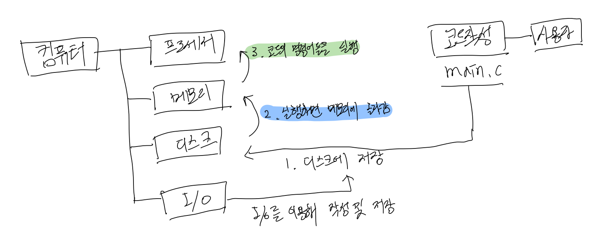
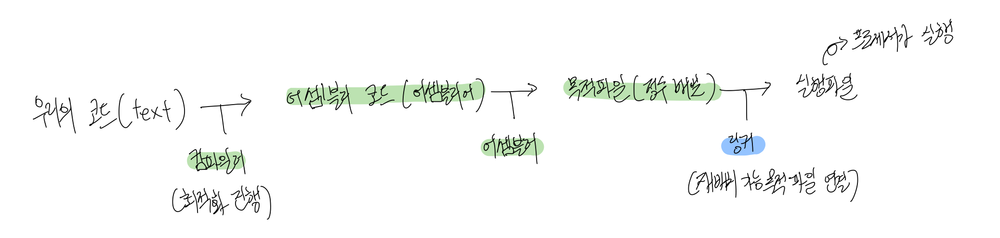
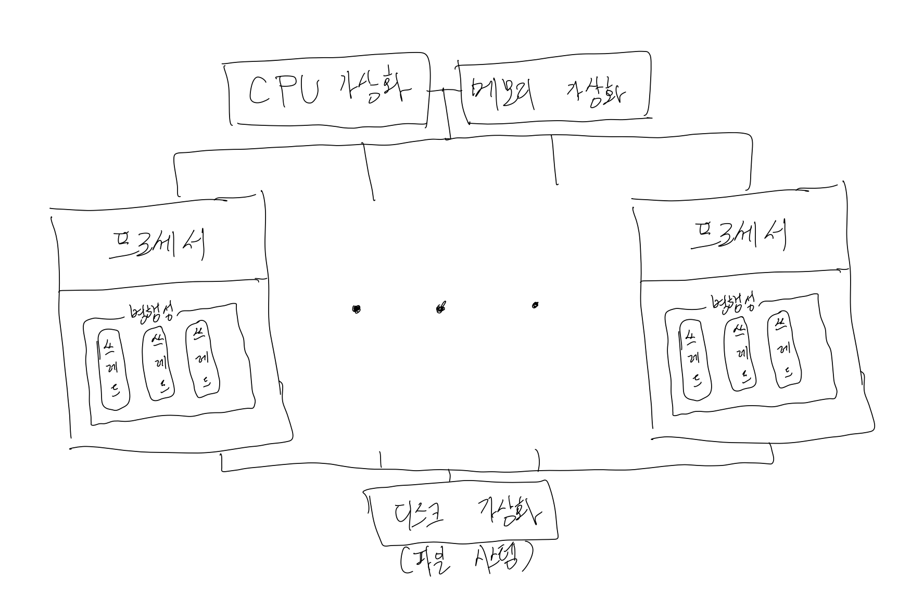

1. 우리의 코드는 컴퓨터가 어떻게 해석하고 실행할까?
우리는 코드를 작성한다. 그리고 실행한다. 컴퓨터는 우리가 작성한 코드를 해석하고 명령어들을 실행한다. 컴퓨터는 어떤 과정을 통해서 우리의 코드를 해석하고 실행할까? 간단한 그림을 그려보겠다.

그림을 보면 우리의 코드는 크게 네가지의 스텝으로 나누어 프로세서에 의해 실행된다.
- 코드 작성
- 디스크에 저장
- 실행시 코드가 디스크에서 메모리로 올라감
- 프로세서에서 메모리의 명령어들을 읽어와서 수행함
2. 우리의 궁극적인 목적은?
우리의 궁극적인 목적은 우리의 코드가 실행되는 원리를 이해하여 코드의 병목을 줄이고 코드를 최적화하는 것이다. 이를 위해서 우리는 우리의 코드가 만들어낸 프로세스를 실행 및 관리하는 운영체제를 이해하고 있어야 한다(물론 운영체제를 이해하는 이유가 코드의 최적화만 있는 것은 아니다). 그렇다면 운영체제는 어떻게 프로세스를 관리할까? 운영체제의 시스템과 하드웨어의 도움을 통해서 관리한다. 즉, 컴퓨터 구조를 이해하고 있어야지 운영체제가 하드웨어의 어떤 도움을 받아 프로세스를 관리하는지 이해할 수 있다.
그렇기 때문에 우리는 컴퓨터 구조를 먼저 이해하고 운영체제를 공부한다.
3. 우리의 코드는 실제로 어떤 절차를 통해 해석 되는가?
컴퓨터 구조를 이해하기 전에, 실제로 우리의 코드가 어떤 절차를 통해 프로세서가 해석을 할까? 간단한 그림을 그려보겠다. 
위의 그림과 같은 절차로 우리의 코드는 변경을 반복하며 결국 프로세서가 해석할 수 있는 정수 배열의 실행 파일로 만들어진다.
4. 컴퓨터 구조 - 프로세서는 우리의 코드를 어떻게 해석할까?
프로세서는 0과 1만을 해석한다. 또한 간단한 정수들의 연산으로 명령어를 실행한다.
- 하드웨어가 하는 일을 이해하기 위해 정수표현과 산술연산을 배운다.
- 어셈블리어: 컴파일러는 우리가 작성한 코드를 어셈블리 코드로 변경할 때 최적화를 진행한다.
- 인스트럭션: 어셈블러는 어셈블리 코드를 통해서 프로세서가 구축한 ISA를 기준으로 인스트럭션을 생성하여 목적파일에 인코딩한다.
- 프로세서 구성: 인스트럭션을 프로세서는 우리의 명령어를 수행한다. 프로세서를 구성해보자.
- 프로세서에 파이프라인 추가: 일반 프로세서는 성능이 떨어지기 때문에 파이프라인을 도입한다.
위 다섯 스텝을 공부하면서 우리는 우리의 코드를 프로세서가 어떻게 해석하는지 알게 되었다. 그렇기 때문에 우리의 코드중 어떤 부분이 프로세서의 해석에 도움이 되지 못하는 병목현상인지 확인할 수 있게 되었고, 이를 통해서 우리의 코드를 일정 부분 최적화(루프풀기, 데이터 의존성 제거 등..)할 수 있게 되었다!
 
초록색 부분들을 배웠다!
5. 컴퓨터 구조 - 우리의 코드는 어떻게 메모리에 올라갈까?
이제 프로세서단에서의 컴퓨터의 행동이 어떤것이 있는지 모두 확인하였다. 그렇다면 코드가 어떻게 메모리에 올라가는지를 확인해보자. 이를 확인하기 위해서는 메모리에 대해서 알아야하고, 우리가 살펴보지 못한 링커에 대해서도 알아봐야한다.
링커를 배워야 하는 이유는 우리의 코드는 다양한 라이브러리를 사용한다. c언어는 기본적으로 stdio 라이브러리를 사용하여 i/o를 구현한다. 이러한 라이브러리는 어떻게 공유되어 우리의 코드에 적용되는 것일까? 링커를 알아야 한다!
- 링커
- 메모리
 
파란색 부분들을 배웠다!
6. 운영체제
이렇게 컴퓨터가 어떤 구조로 이루어져 있는지 확인하였고, 컴퓨터가 우리의 코드를 해석하고 명령어를 수행하기 위해 어떤 작업들을 진행하는 지 알게되었다. 그렇다면 이제 운영체제는 하드웨어를 어떻게 활용하여 우리의 코드 즉, 프로세스를 관리할까?
운영체제는 세가지 속성을 사용하여 프로세스를 관리한다.
- 가상화: 가상화를 통해 우리가 만든 프로세스가 독립적인 존재이며 CPU와 메모리를 단독으로 사용한다고 느끼게 해줄 수 있다. 그렇기 때문에 프로세스 가상화와 메모리 가상화를 배운다.
- 병행성: 컴퓨터가 점점 발전해감에 따라 프로세서들이 하나에서 여러개로 많아졌고 이를 통해 프로세스들을 병렬적으로 사용하여 성능을 높였다.
- 영속성: 우리의 소중한 데이터가 어떻게 디스크에서 영구적으로 저장되는지 알아야 한다.

마무리
운영체제는 아직 공부중이당… 개인적인 견해가 많이 들어간 글이다…(틀린 부분이 있을 수 있다…) 컴퓨터구조와 운영체제의 전체적인 흐름을 파악하고 싶어서 이렇게 한번 글과 그림으로 정리해봤다. 어느정도 컴퓨터구조와 운영체제가 연결되면서 두 파트 모두 더 잘 이해하게 될 수 있었던거 같다..!